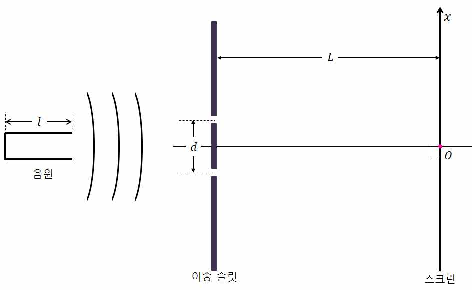
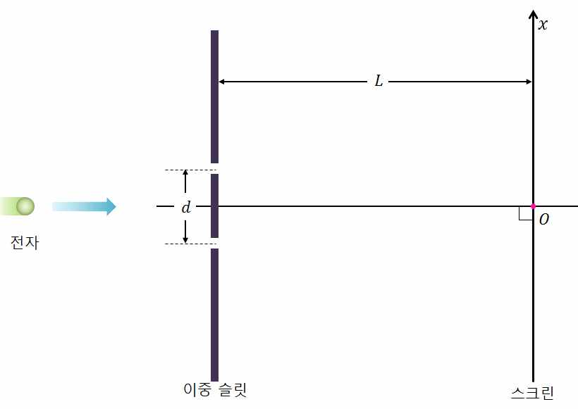

문제 2
슬릿 사이의 거리가 \(d\)인 이중 슬릿에서 \(L\)만큼 떨어진 곳에 스크린이 있다. 단, \(L\)이 \(d\)보다 충분히 크다고 가정하고 각 슬릿의 폭은 무시한다.

2-1. 길이가 \(l\)이고 한쪽 끝이 닫힌 관 속에서 공기가 진동하는 음원이 있다. 이 음원이 기본 진동수의 음을 낼 때 그 진동수를 구하고 스크린 위에서 소리가 크게 들리는 극대점 사이의 거리를 구하시오. 단, 음속은 \(v\)로 한다.
2-2. 문제 2-1에서 음원이 \(v_s\)의 속력으로 스크린을 향해 움직일 때 스크린 위에서 소리가 크게 들리는 극대점 사이의 거리는 어떻게 변하는지 구하시오. (단, \(v_s < v\)이고 음원은 \(d\)에 비해 충분히 먼 곳에서 접근한다고 가정한다.)

2-3. 정지 상태에서 전압 \(V\)로 가속된 전자를 하나씩 이중 슬릿에 통과시키는 실험을 무수히 반복할 때 스크린 위에서 전자가 많이 분포하는 극대점 사이의 거리를 구하시오. 전자의 질량은 \(m\), 기본 전하량은 \(e\), 플랑크 상수는 \(h\)이다.
2-4. 동일한 에너지를 가지는 전자선을 결정에 쏘는 실험을 생각해 보자. 결정에서 튀어 나온 전자의 각도에 따른 분포를 통해 어떻게 전자의 파동성을 증명할 수 있을지 설명하시오.